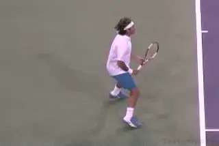
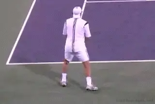
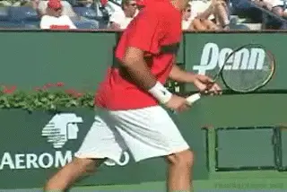
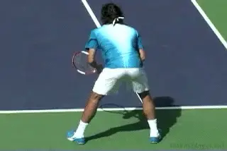
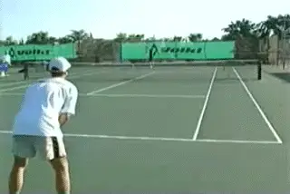
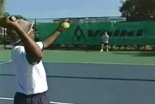
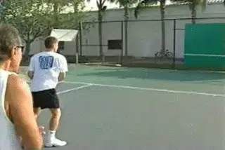
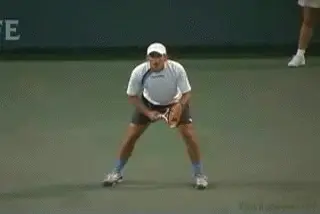
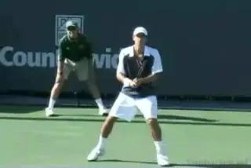
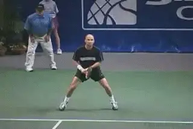

Return Technique¶
Return Technique¶
Nick Bollettieri¶

Drive returns are compact versions of groundstrokes.
Don't tell me you go out on the tennis court just to play and have fun. You go out there to win! The fun part is going home and saying, \"Hey, I won today against the big server.\" You have to have the attitude, but you must also know and feel exactly how to hit the return.
In the first article in this series, we looked at the return mentality. link Without the right attitude, the rest doesn't matter. But now that we have established the return mind set, we can address the issue of technique.
There are no huge mysteries in this day and age about how to return. When you drive returns, your swings should have the look of a more compact version of your groundstrokes. When you chip and block returns, they take on the look of your volley. In the pro game today, there is also a third option, which is to move back, particularly on the second serve, and let it rip with a full swing. (For more on this see Bobby Bernstein's fine article, link.)

Chipped or blocked returns have the look of volleys.
The hard part about the return of serve isn't the theory. The hard part is the execution. So let's go through and look at how you can make all this happen in your game, step by step.
Grips
There are a lot of possible grip options when waiting for the return. But my feeling is that players who wait with full backhand grips have greater difficulties switching quickly enough when the serve comes to the forehand side. For whatever reason, that grip shift is more awkward than the other way around. I've noticed that players who wait with the backhand grip tend to position deeper in the court to allow more reaction time.

\ A compromise, less extreme forehand grip for returns.One compromise here is the return grip used by Roger Federer, similar to Pete Sampras before him. Both of these great returners waited with a less extreme version of their forehand grip. This gives the option of either blocking or chipping the return. It is also a relatively small adjustment to the full forehand or backhand grip when he decides to drive the ball with a fuller swing.
Split Step
It's been said many times before, but it is still true: the timing of the split step is critical for the return. As the server makes contact with the ball, the returner should split step and establish a wide athletic base for quick reaction left or right. That means a base that is two shoulder widths apart, or even wider, [a low hip position through bending the knees], and strong upright back posture. (For more on the Athletic Foundation, link.)

A brief pause at the split, a wide base, a quick reaction.
You want to pause only briefly, if at all, in the split step position, long enough only to identify the location of the serve. On many returns, elite players actually begin to move toward the ball with the outside foot during the split step itself, rather than coming down on the court with both feet. This results from years of practice in reading the serve off the racket and/or the motion of the server which can tip off the placement even before contact. Don't try to force this--let it develop naturally as you become better at reading and reacting.
Jack in the Box
A common problem many players experience on the return is what I call the \"Jack in the Box.\" The moment the server makes contact, the returner springs up too high into the air like a jack in the box.
At the moment they should be reacting and making their move to the ball, these players can be a foot off the ground. By the time they land, it's too late to execute. Launching upward may feel like you're creating power but often this results in losing control of the stroke, causing frequent miss hits off the bottom edge of the frame.

\"Jack in the Box.\" Explosive, but in the wrong direction.
Whether you want to [drive or block the return], you must learn to [keep the backswing short] and [the contact in front.] Most players know they should use less swing, but still don't. The question is how to learn this. There are two simple, but very effective techniques we use at the Academy to help players feel how to shorten their motions and time the return. I call them: The Fence and The Wall.
The Fence
The fence is a great teacher. I use it and I don't have to say a word. I just watch. If you stand just in front of the fence, you'll will quickly learn to shorten the swing. Have the server move in so the ball reaches you in your strike zone. It's impossible to return when your backswing hits the fence!
Sometimes students don't really believe how big their back swing is, but the fence doesn't lie! The players automatically learn to turn their hips and shoulders and take a very compact swing. All the explanation in the world can't substitute for the feeling you get from this exercise.

The fence can teach you everything about the return.
The Wall
Training with a backboard has become a lost art. But it is a fabulous tool for working on the return. I often hear this excuse: \"I can't work on my return, because I don't have somebody to serve me hundreds of balls.\" Guess what? You don't need a server. Used correctly, the backboard becomes the server. Here's how it works.
The student starts about thirty feet from the backboard and hits forehands and backhands using a neutral stance. Notice at this distance he can go into an open stance, has plenty of time to make the grip change and can take a rather big swing.

Hundreds of simulated returns, without a partner.
Now move in a step or so. This automatically forces the player to start shortening up, picking up the ball a sooner, making that quick transition from a forehand to a backhand grip, and also utilizing the open stance a lot more than ever before.
Now another step. The more confidence you gain, the closer you're going to get to that backboard. By controlling the distance, you can set the timing to the same interval as receiving that big serve. With the wall you can hit hundreds of returns in a row. It's more efficient than with an actual server.
Routines
Developing a consistent routine leading up to the execution of the return will play an important role in establishing your timing and feel. One of the most effective routines is to start back a few steps and as the toss goes into the air, then move forward to establish momentum. This is particularly common in pro tennis when players are planning to chip or block the return or hit a forcing return on the rise.

Move in to block, chip or hit on the rise, move back to swing.
In other situations, you'll see the returner start closer in, then move back a few steps before split stepping. This happens more often on second serves, when the returner moves around the ball and hits a forehand return with a full swing. If you use this routine, make sure you drive your body weight forward as you execute, to reverse the momentum you created when moving backwards.
Other players are successful staying in one position, not moving forward or back, creating the split step at the same depth as their starting position.
Every player can experiment to find which routine or routines work best for them. Just make sure you maintain the timing of your split step with the contact point on the serve and make every effort to create forward momentum in every return.

\ Reach returns: the true test of a player's skill.Reach Returns
If you want to be able to handle big serves, you have to develop quickness in your lateral movement. You have three quarters of a second or less to react and execute against a 100mph plus serve. The true test of a returner's skill is their range of coverage on extreme placements that make the returner move and/or lunge to execute. When the ball is wide, this means players often hit with open stance, or hit with one foot in the air, ending up in a neutral stance on the finish.
Most players struggle to generate power and maintain control on the full reach return. This is because the majority of players prepare for the full reach return by taking the racket back. But the best returners prepare by positioning the hand behind the ball as if they are going to catch the ball off the bounce.

On reach returns position the hand behind the ball.
It's this initial movement that keeps the motion of the great returners so compact. Watch that the hand and racket never go back behind the edge of the body. Power comes from the explosion forward from the legs into the shot. This is naturally combined with a pulling action of the racket back across the body. So if you want to hit great full reach returns, [[prepare by reaching out and positioning the hand behind the ball. You'll] [be able to use this compact motion to put those would be aces back into play.]] You'll also have plenty of power to drive through those off-speed spinners. Remember the goal is to go home a winner against those big servers!
So that's it for the first two parts of the return: mentality and technique. What's next? Stay tuned for Part 3 on planning.

Nick Bollettieri is the legendary coach who invented the concept of the tennis academy more than 30 years ago. He has trained thousands of elite players, including some of the greatest champions in the history of the game, players like Andre Agassi, Tommy Haas, Jim Courier, Monica Seles, Maria Sharapova, and Boris Becker. IMG Bollettieri Academies are located in Bradenton, Florida.